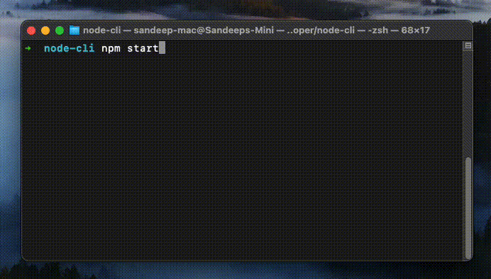
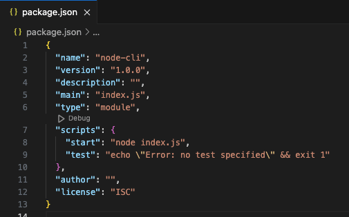
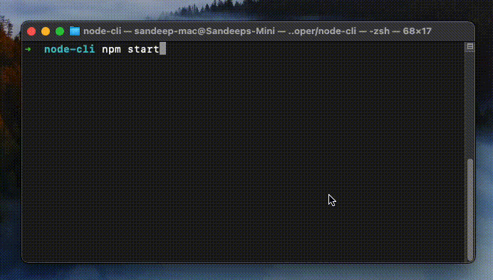

Interactive NodeJS Command Line Application

Let’s face it, not all applications need to have a GUI. Especially when it comes to a large enterprise work enviornment, you are limited by the resources provided to your team. Whether it is time, user runtime or both.
In this step-by-step guide we will learn how to create an interactive nodejs command line application which fetches quote of the day, displays the result in fancy ASCII art, asks user whether they want to save the quote by writing to the file system. And we will also work with javascript Promises along the way.
Demo TL;DR
This is what we will be building:

Requirement
- When the application starts, a random quote is fetched from an API.
- While the quote is being fetched, we will display a loading text with spinner using
orapackage. - The quote will be displayed in an attractive manner using the
boxenpackage. - In the end we will prompt a confirm question to the user to save the quote in
jsonformat by usinginquirerpackage.
Setup Project
Create a new folder for e.g. node-cli and navigate into it using your favourite terminal.
Run npm init and follow the prompts.
Open the newly created directory in your favourite IDE and open the package.json file. We will add a starter script and define the type as module for easy importing.
Your package.json should look like this initially:

Create a index.js file in the same place as your package.json. This will be the entry point to our application. For now just save it with console.log("Hello, world!");.
Open your terminal at node-cli folder and run the command npm start. If everything is correctly configured, terminal will say “Hello, world!” as below:

Now that’s out of the way, let’s start building.
Importing required packages
npm install inquirer ora boxen uuid
Defining utilities and questions
Create a new folder src in the root directory. Inside this folder we will create two new files. utilities.js will contain our helper functions which we will call from index.js. Helper functions include fetching a random quote from API and saving the quote to filesystem in a json file. The other file will be questions.js which will contain the confirm prompt to the user, whether they want to save the quote or not.
In the utilities.js file we will call the Zen Quotes API to fetch a random quote. In order to simulate that the API is taking time, we will wrap this as a Promise which resolves after 5 seconds.
// ./src/utilities.js
export function getRandomQuote() {
return new Promise(async (resolve, reject) => {
let resp = await fetch("https://zenquotes.io/api/random");
let quote = await resp.json();
setTimeout(function () {
resolve(quote);
}, 5000);
});
}
In the index.js file, we will first display a spinner which says that the quote is being fetched from the internet. To display the spinner we will make use of a package called ora. To display the quote in a fancy manner we will use boxen.
// index.js
import * as utils from "./src/utilities.js";
import ora from "ora";
import boxen from "boxen";
let spinner = ora("Fetching quote from the internet...").start();
let quote = await utils.getRandomQuote();
spinner.succeed("Quote fetched:");
console.log(
boxen(`${quote[0].q}`, {
title: `${quote[0].a}`,
padding: 1,
margin: 1,
borderStyle: "round",
})
);
Note: As utils.getRandomQuote() returns a promise, we can await the response and essentially block the execution till the quote is received.
Ask a question
Now let’s add the functionality of asking a question. In the questions.js file we will add a new export function as follows:
// ./src/questions.js
import inquirer from "inquirer";
export function confirmSave() {
return inquirer.prompt([
{
name: "confirm",
message: "Do you want to save this quote?",
type: "list",
choices: ["Yes", "No"],
},
]);
}
Note: You can ask multiple questions in a single prompt. Note how inquirer.prompt is taking an array of objects as input.
Here in the exported function confirmSave() we are returning the result of a prompt. The property name is the key of the user’s answer. inquirer.prompt is internally a promise, hence in the index.js file we can call it as below:
let confirmResp = await questions.confirmSave();
Let’s create another function in the utilities.js file to save the quote in json format in local file.
// ./src/utilities.js
import fs from "fs";
import { v4 as uuidv4 } from "uuid";
export function getRandomQuote() { ...
}
export async function saveQuote(quote, author) {
let path = "data/quotes.json";
if(!fs.existsSync(path)) {
// file does not exist, create one
if(!fs.existsSync("data")) {
// folder does not exist, create one
fs.mkdirSync("data");
}
let id = await uuidv4();
let data = {};
data[id] = {
quote: quote,
author: author
};
let dataString = JSON.stringify(data);
fs.writeFileSync(path, dataString, "utf-8");
} else {
// file exists, append quote
let dataString = fs.readFileSync(path);
let id = await uuidv4();
let data = JSON.parse(dataString);
data[id] = {
quote: quote,
author: author
};
dataString = JSON.stringify(data);
fs.writeFileSync(path, dataString, "utf-8");
}
return true;
}
Here we are using nodejs filesystem API to interact with the local file. Also, we are using uuid to generate an ID for our quote.
Finally, in our index.js we will have the following:
// index.js
import * as questions from "./src/questions.js";
import * as utils from "./src/utilities.js";
import ora from "ora";
import boxen from "boxen";
let spinner = ora("Fetching quote from the internet...").start();
let quote = await utils.getRandomQuote();
spinner.succeed("Quote fetched:");
console.log(
boxen(`${quote[0].q}`, {
title: `${quote[0].a}`,
padding: 1,
margin: 1,
borderStyle: "round",
})
);
let confirmResp = await questions.confirmSave();
if (confirmResp.confirm.toUpperCase() == "YES") {
let spinner = ora("Saving quote").start();
let saved = await utils.saveQuote(quote[0].q, quote[0].a);
if (saved) {
spinner.succeed("Quote saved");
} else {
spinner.fail("Could not save quote");
}
} else {
// exit
}
So there you have it. We have covered each fo the basic interactivity we are used to seeing in modern command line applications. The packages used are linked below for further reference: